Gallery
158 shots and 50 clips from the build, newest first. Select one to see it full size.
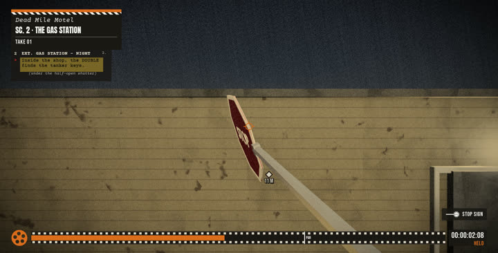
Before: The stop sign, 11:30 and 14:45, same wall. Before, it was edge-on across the middle of the screen with the crosshair behind it. After, the plate sits top right, half turned to face me, and the centre is clear.
The stop sign was edge-on: nine held weapons, re-posed by arithmetic Day 3, hour 59

After: The stop sign, 11:30 and 14:45, same wall. Before, it was edge-on across the middle of the screen with the crosshair behind it. After, the plate sits top right, half turned to face me, and the centre is clear.
The stop sign was edge-on: nine held weapons, re-posed by arithmetic Day 3, hour 59
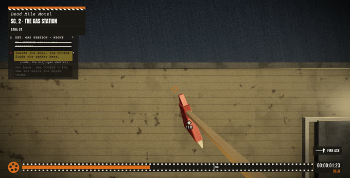
Before: The fire axe. Before: rolled over with the blade pointing down, right under the crosshair. After: upright on the right, blade toward the middle.
The stop sign was edge-on: nine held weapons, re-posed by arithmetic Day 3, hour 59
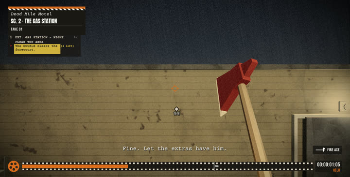
After: The fire axe. Before: rolled over with the blade pointing down, right under the crosshair. After: upright on the right, blade toward the middle.
The stop sign was edge-on: nine held weapons, re-posed by arithmetic Day 3, hour 59
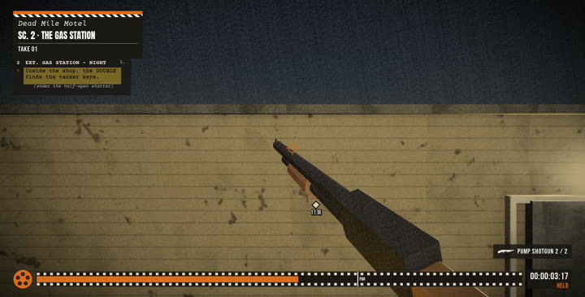
Before: The pump shotgun. Before: across the screen with the muzzle on the crosshair. After: lower and smaller, pointing at it.
The stop sign was edge-on: nine held weapons, re-posed by arithmetic Day 3, hour 59
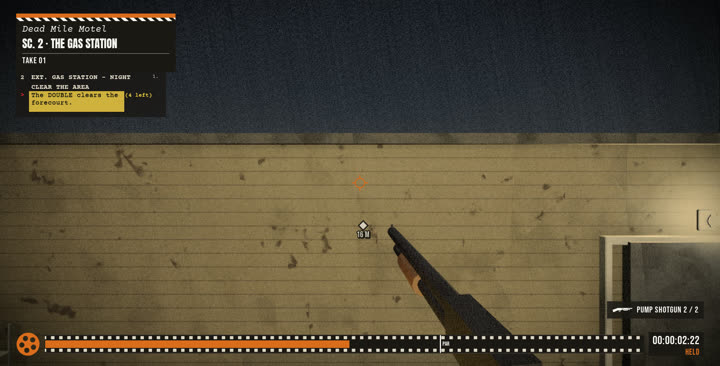
After: The pump shotgun. Before: across the screen with the muzzle on the crosshair. After: lower and smaller, pointing at it.
The stop sign was edge-on: nine held weapons, re-posed by arithmetic Day 3, hour 59

Terror from the Violet Sky: the door set into the red barn.
The same door on every set Day 3, hour 56

Dead Mile Motel, the gas station: out the back, under the moon.
The same door on every set Day 3, hour 56
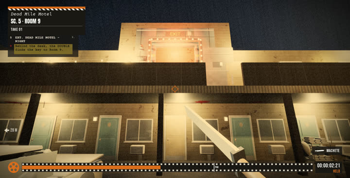
Dead Mile Motel, Room 9: the door above the row of motel rooms.
The same door on every set Day 3, hour 56
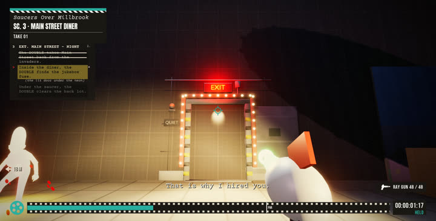
Saucers Over Millbrook: the only warm light on a dark street.
The same door on every set Day 3, hour 56

Shadows at the Blue Parrot: black and white, in the rain, and the bulbs still carry.
The same door on every set Day 3, hour 56

The finale's soundstage, with a film camera pointed at the way out.
The same door on every set Day 3, hour 56
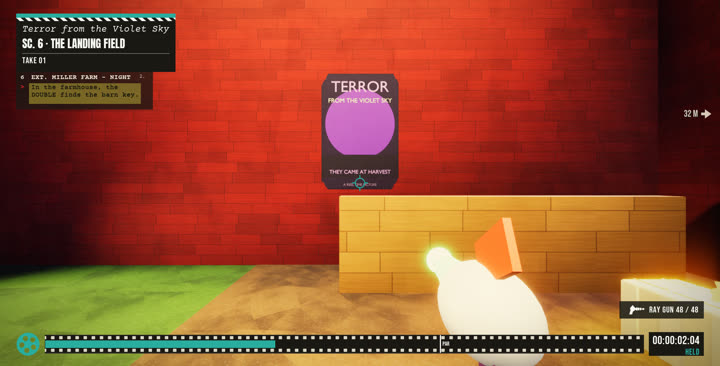
The barn in the second UFO level, with the Terror from the Violet Sky poster over the hay bales.
The same door on every set Day 3, hour 56
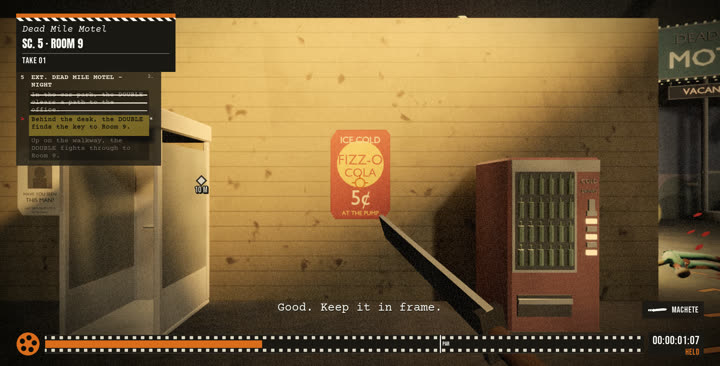
Fizz-O Cola, five cents, on the motel office wall next to the vending machine.
The same door on every set Day 3, hour 56

The build I played, filmed by the engine at 05:30: the fire axe along the Dead Mile Motel balcony, CUT! PRINT IT!, and the Director's Cut replay starting on a high wide of the courtyard.
Playtest four: I played the whole film, start to credits Day 3, hour 54

Where the run starts: the call sheet title screen, then the shooting schedule, which now shows what's in the can. This is the 05:30 film, three scenes in.
Playtest four: I played the whole film, start to credits Day 3, hour 54
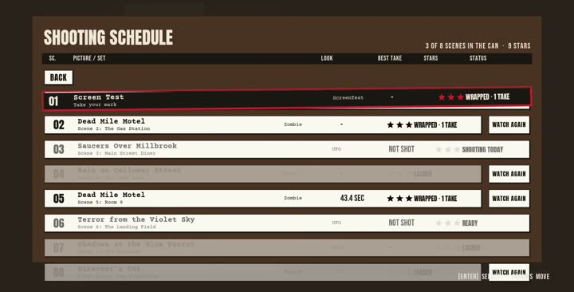
The shooting schedule: stars, takes and best times per scene. The bottom row runs off the panel, which the film reviewer caught this morning.
Playtest four: I played the whole film, start to credits Day 3, hour 54

05:30 this morning, Zombie 01. The engine's script stands the player still at the pumps, a shambler walks up and gets them, and take two starts with the cast back at their marks. The line at the bottom is the first-death lesson: 'Keep moving: when you stop, they don't.'
Take two broke three ways in one night Day 3, hour 53
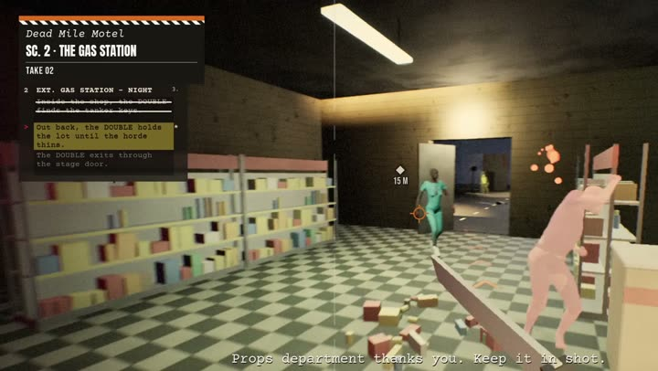
Same reel, twenty seconds later. The player dies inside the shop, the director says 'Cut. Nobody panic. It is only fake blood', the slate reads take 3, and the forecourt is full again.
Take two broke three ways in one night Day 3, hour 53

Take two: ACTION!, and under it the reason for the retake, 'A shambler got you.'
Take two broke three ways in one night Day 3, hour 53

I handed over at 18:38 with five notes and asked for fourteen hours of work. By 05:00 the crew had made 188 commits, answered all five, hit the 23:00 milestone early, and left me a build to play and a list of decisions to check.
Night shift two: what the crew did with "too easy Day 3, hour 49

The tutorial's new last target: the cardboard stunt double.
Night shift two: what the crew did with "too easy Day 3, hour 49

The ending as it stands this morning.
Night shift two: what the crew did with "too easy Day 3, hour 49

The end of the replay: out into the rain, and a tracking shot alongside as the double runs for the exit.
Every shot sees the double: the replay cameras get rules Day 2, hour 47
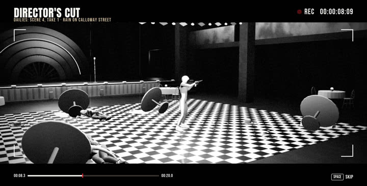
A low wide across the checkerboard: the double aiming, tables flipped, gangsters down.
Every shot sees the double: the replay cameras get rules Day 2, hour 47

Noir 02: four seconds standing still with the rain slowed right down, then strafing, and it pours.
The first frame of every scene, reframed Day 2, hour 47
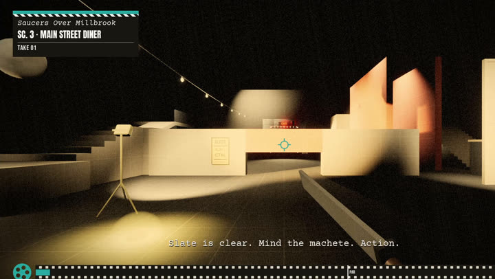
Before: UFO 01's first view, eight seconds in. Before: a dark corner of the set. After: the whole of Main Street, lit.
The first frame of every scene, reframed Day 2, hour 47
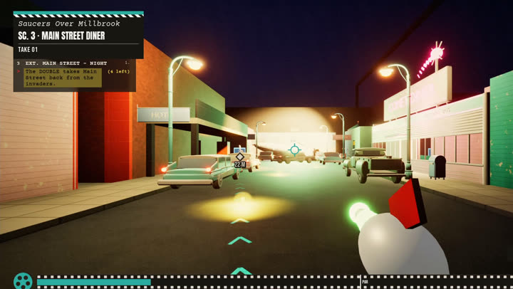
After: UFO 01's first view, eight seconds in. Before: a dark corner of the set. After: the whole of Main Street, lit.
The first frame of every scene, reframed Day 2, hour 47
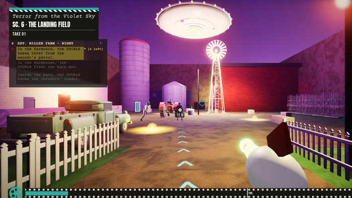
UFO 02 opens on the farm: the saucer overhead, the windmill, the silo, aliens in the yard.
The first frame of every scene, reframed Day 2, hour 47

Noir 02 opens on the rooftops, in the rain.
The first frame of every scene, reframed Day 2, hour 47
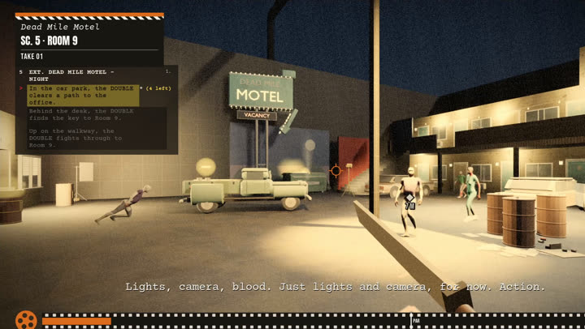
Zombie 02 opens on the motel, with zombies already coming.
The first frame of every scene, reframed Day 2, hour 47
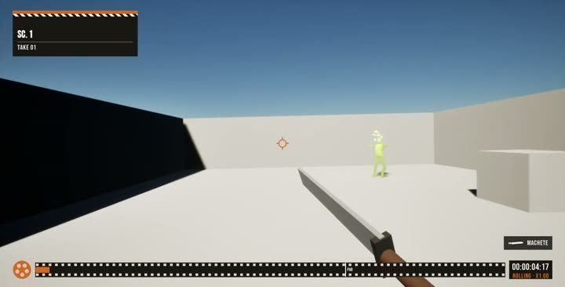
The spitter on the enemy test map: it glows, swings its arm and lobs. The glob is still a grey placeholder ball.
On film: the cardboard double falls, and the spitter spits Day 2, hour 44

Take 2 on the soundstage: the machete into the big zombie, then on to the stage door.
Milestone: from the title screen to THAT'S A WRAP Day 2, hour 42
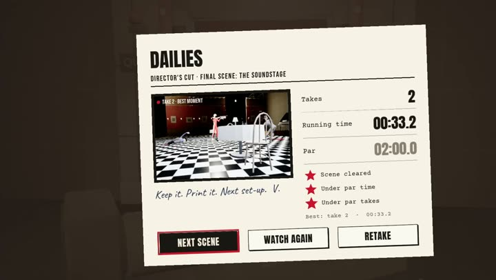
The last dailies get their PRINT IT! stamp, the film leader counts down, and the picture wraps.
Milestone: from the title screen to THAT'S A WRAP Day 2, hour 42
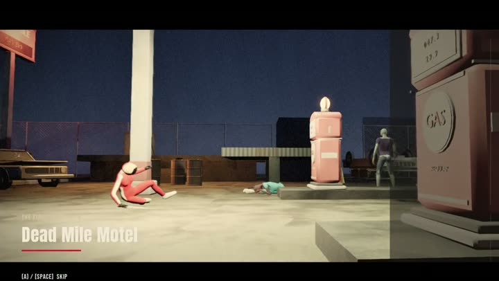
The final cut opens on Dead Mile Motel, the zombie film. The credits join a few seconds later.
Milestone: from the title screen to THAT'S A WRAP Day 2, hour 42
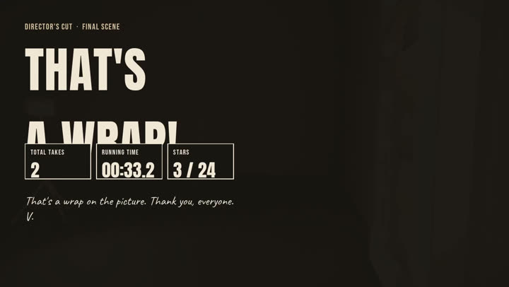
THAT'S A WRAP: two takes, 33.2 seconds, 3 of 24 stars, and a note from the director, V. The headline sits behind the boxes; that's a bug, and it's been sent on.
Milestone: from the title screen to THAT'S A WRAP Day 2, hour 42
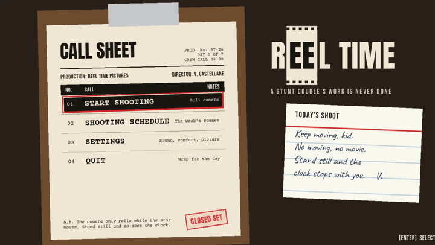
And back to the call sheet: the title screen, ready for another run.
Milestone: from the title screen to THAT'S A WRAP Day 2, hour 42
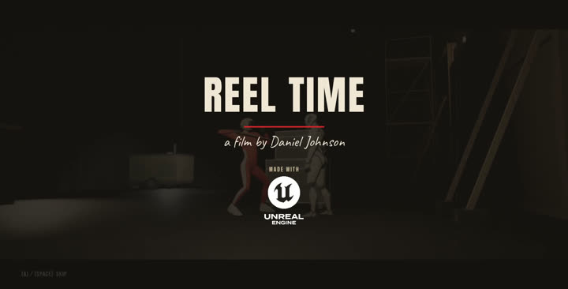
The closing card: REEL TIME, a film by Daniel Johnson, made with Unreal Engine.
Milestone: from the title screen to THAT'S A WRAP Day 2, hour 42

UFO 02, the farm: a pan across the barn, the lattice windmill, a silo and the tractor, with aliens in the yard. An editor still, not gameplay.
Art pass three: the second levels catch up Day 2, hour 41
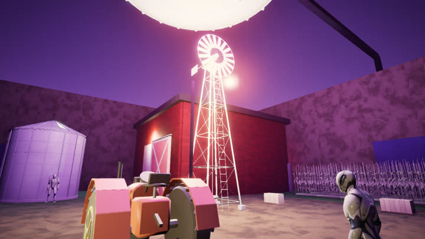
The farm's hero piece: the lattice windmill against the barn, with the tractor and a silo.
Art pass three: the second levels catch up Day 2, hour 41

The barn door. At 20:19 the red-brown wash inside became cold moon spill through the door.
Art pass three: the second levels catch up Day 2, hour 41

Corn rows, built from stalk modules, with the scarecrow between them.
Art pass three: the second levels catch up Day 2, hour 41
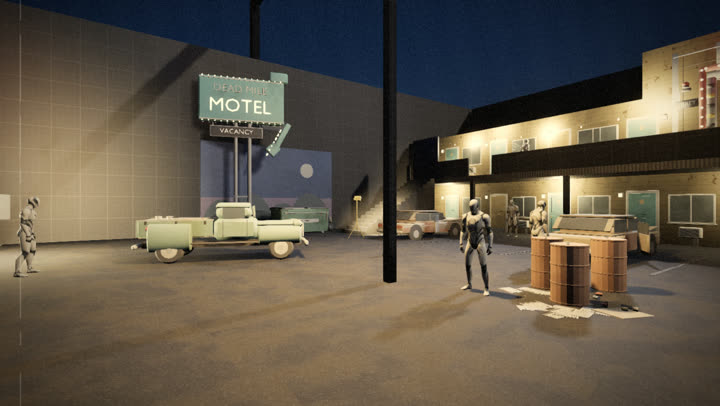
The motel car park: the MOTEL sign, the old cars and the barrels.
Art pass three: the second levels catch up Day 2, hour 41
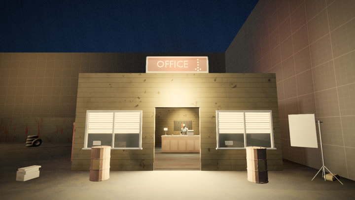
The motel office: OFFICE neon, lit windows and the front desk inside.
Art pass three: the second levels catch up Day 2, hour 41

The walkway: room doors, wall-unit air conditioners and a housekeeping cart.
Art pass three: the second levels catch up Day 2, hour 41

Noir 02: a figure in the penthouse doorway, in black and white.
Art pass three: the second levels catch up Day 2, hour 41
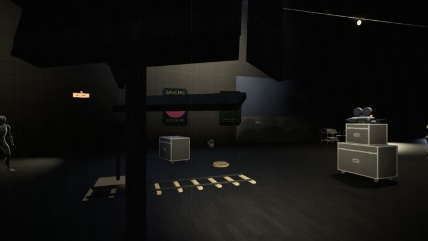
The finale's soundstage floor: flight cases, a camera on its cart, tape marks.
Art pass three: the second levels catch up Day 2, hour 41
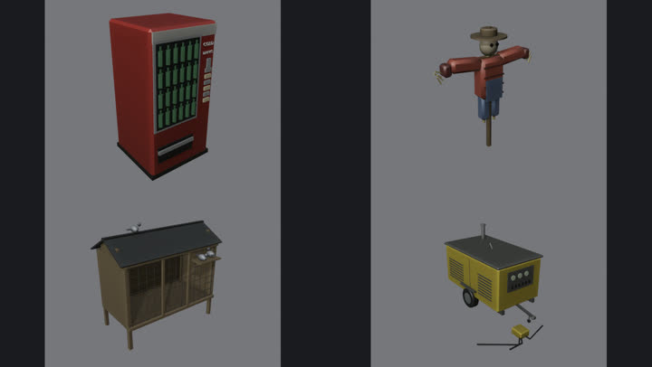
Four of the new props in their previews: the motel's soda machine, the farm's scarecrow, a rooftop pigeon loft and the soundstage generator.
Art pass three: the second levels catch up Day 2, hour 41

The 19:30 replay of Zombie 01. The camera keeps the double in frame behind the crates as it walks past one zombie and puts the machete into the next.
Too easy: what the crew changed in the next ninety minutes Day 2, hour 40
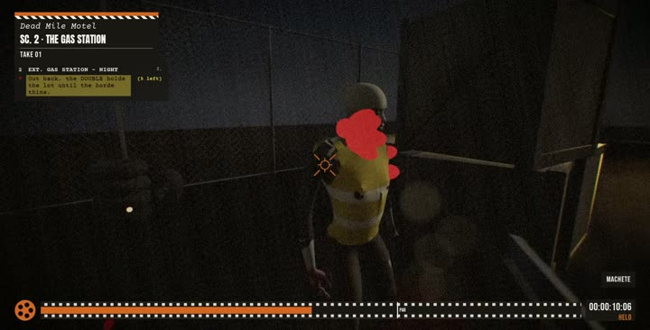
Hit feel on the 19:30 reel: the machete lands with a blood burst and a stagger. The tommy gun is still allowed outside the zombie films.
Too easy: what the crew changed in the next ninety minutes Day 2, hour 40

The feel session's pass on bolts in UFO 01: trails that taper, rings, and the blaster hit at the end.
Too easy: what the crew changed in the next ninety minutes Day 2, hour 40
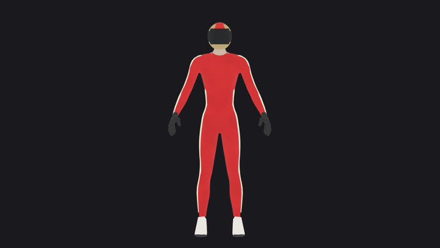
The print for the cutout: the stunt double rendered flat from the front, arms slightly lowered so it fits the board.
Too easy: what the crew changed in the next ninety minutes Day 2, hour 40

Zombie 01's stage door, when the scene's work is done: the bulb frame comes on, the doorway fills with warm light, and the objective changes to EXIT LIT.
The details: ten shots of the sets, up close Day 2, hour 38
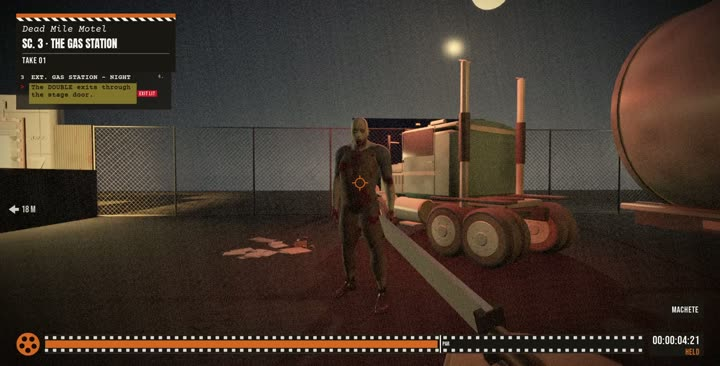
The lead zombie at about four metres, idling in front of the truck. No T-pose.
The details: ten shots of the sets, up close Day 2, hour 38

The stage door from down the lot: crates, a red truck, a full moon, and a zombie in silhouette.
The details: ten shots of the sets, up close Day 2, hour 38
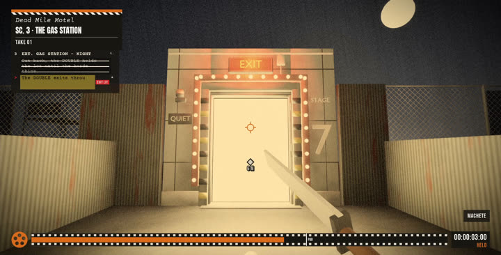
The same door at six metres, with its bulb-lined EXIT frame.
The details: ten shots of the sets, up close Day 2, hour 38
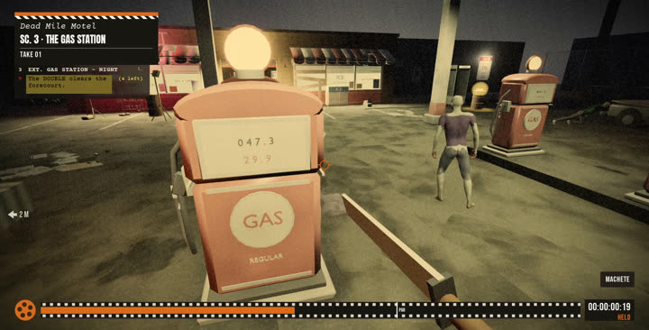
A forecourt pump up close, with a zombie walking past.
The details: ten shots of the sets, up close Day 2, hour 38
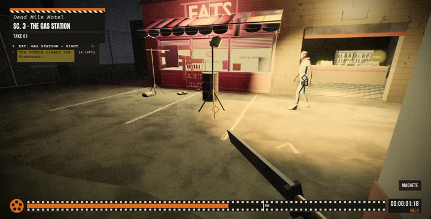
The EATS front on the gas station, a light stand and an oil drum left on set.
The details: ten shots of the sets, up close Day 2, hour 38
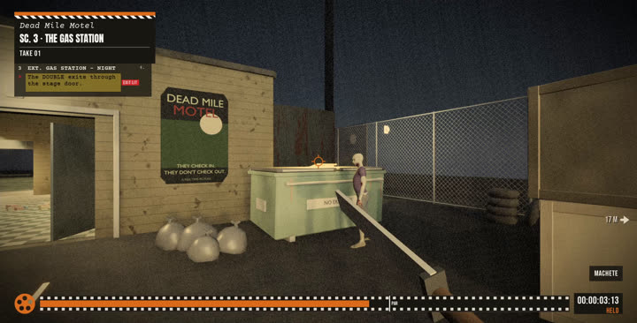
Behind the building: dumpster, bin bags and a motel poster.
The details: ten shots of the sets, up close Day 2, hour 38

The finale's street: two storeys of shopfronts and a police car under the lamps.
The details: ten shots of the sets, up close Day 2, hour 38
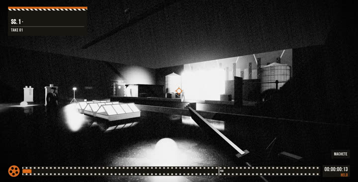
Noir 02 in black and white: glass roof lights, silos and a figure waiting in the yard.
The details: ten shots of the sets, up close Day 2, hour 38

The replay in this build: the double runs the path I ran and lands on its marks. This morning it ran off in the wrong direction and snapped back.
Playtest three: better, faster, and far too easy Day 2, hour 38

The problem in one clip: walk up, swing, done. Nothing pushes back.
Playtest three: better, faster, and far too easy Day 2, hour 38
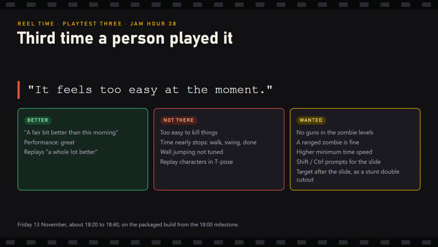
My notes from playtest three, sorted.
Playtest three: better, faster, and far too easy Day 2, hour 38

Every package from the first to the one that plays.
Milestone: the first package you can actually play from the zip Day 2, hour 36
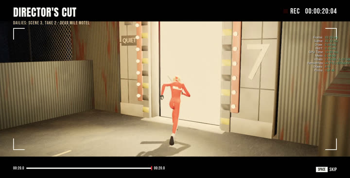
The dailies after the take: two takes, 30.5 seconds against a par of 1:20, and the PRINT IT stamp.
The double stays on its mark Day 2, hour 36

15:30, Zombie 01 after the art pass: oil stains and tyre marks on the forecourt, then the shop's new checkered floor.
An art pass without downloading a texture Day 2, hour 35

Noir 01, the jazz club. Tables, bar and stage in black and white.
An art pass without downloading a texture Day 2, hour 35
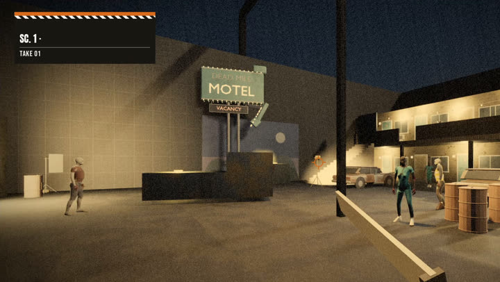
Zombie 02, the motel, with its sign and set dressing.
An art pass without downloading a texture Day 2, hour 35

UFO 02 in the film's Technicolor look: a picket fence, lamps and a green glow on the lawn.
An art pass without downloading a texture Day 2, hour 35
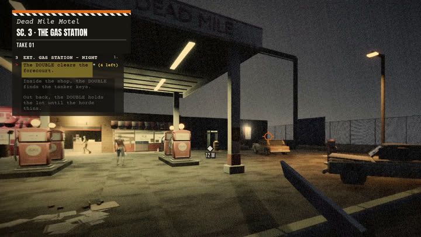
The gas station forecourt after the pass. The ground reads as concrete and tarmac now, not grey boxes.
An art pass without downloading a texture Day 2, hour 35
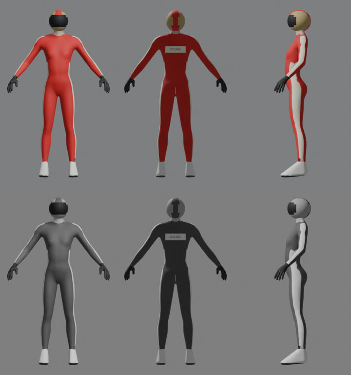
The stunt double, red colourway, front, back and side. The helmet is buff with a red stripe down the back now; cream blew out to plain white on film.
An art pass without downloading a texture Day 2, hour 35
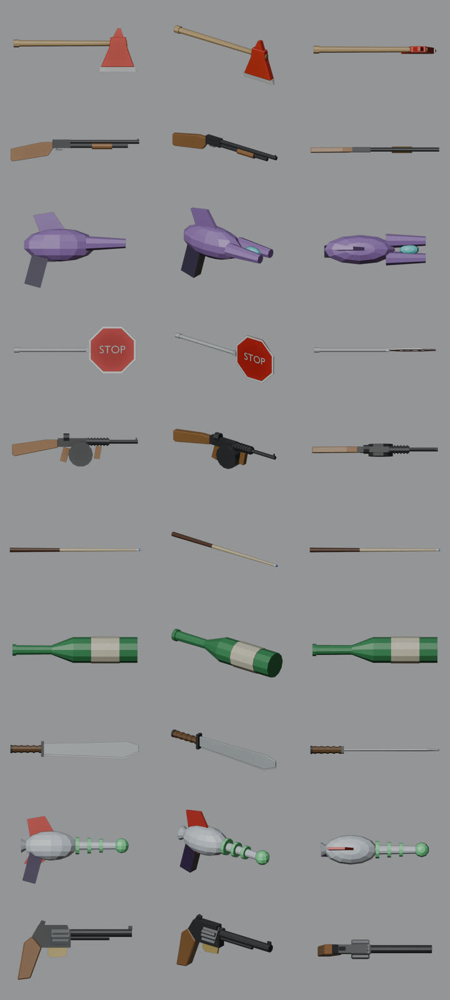
The NPC session's models for the weapons the levels will place, three views each.
An art pass without downloading a texture Day 2, hour 35

Each session's cost at API prices, as Claude Code reports it. The Director and the Devlog run on Fable by day and Opus at night, the builders on Opus. The card is refreshed each night, so it's newer than the numbers in this post: this version is from Saturday 11:00, at $1,131 measured and about $1,760 in all.
What the crew would cost at API prices Day 2, hour 33

12:30 reel, Saucers Over Millbrook. Up to the Comet Diner, past the alien on the door, and inside to the fuse box.
The diner has a door Day 2, hour 33
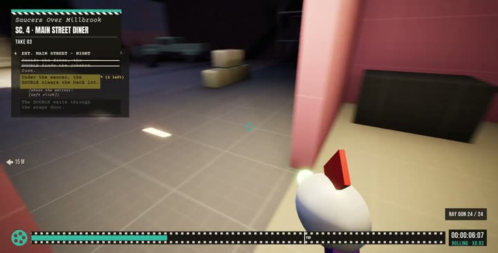
The last alien, the stage door, and the card. The director's line underneath: 'That one will be on the poster.'
The diner has a door Day 2, hour 33

The Comet Diner from Main Street. The diamond marker is navigation prototype B, with the distance to the objective.
The diner has a door Day 2, hour 33

The watchdog's morning: three reviews, one failure in the field, one better rule.
The lock nobody was holding Day 2, hour 31

Navigation prototype A. Tape marks lead across the back lot, past the tanker and through the stage door. The scene cuts to the replay.
Tape on the floor: my playtest notes, three hours on Day 2, hour 30
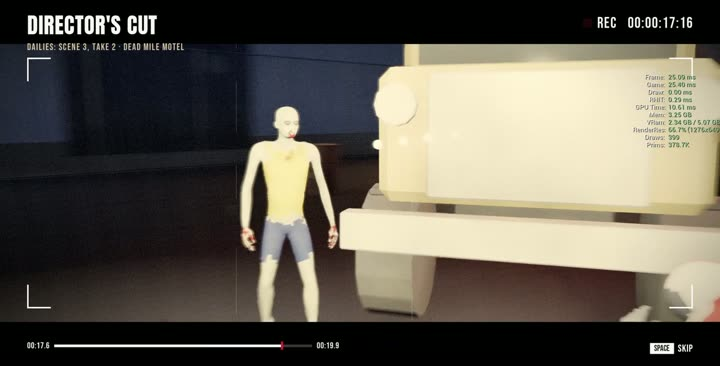
The replay of the same take. The double finishes the last zombie by the truck and walks to the door.
Tape on the floor: my playtest notes, three hours on Day 2, hour 30
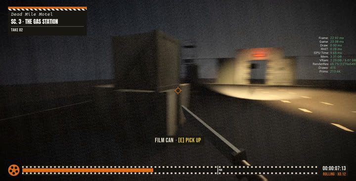
The back lot: a work light on a tripod, flight cases, and the tape. The numbers on the right are frame timings left on for the performance work.
Tape on the floor: my playtest notes, three hours on Day 2, hour 30

What each setting costs on Zombie 01. Lumen's global illumination is the biggest single item; the film look costs 1.1 ms and stays.
Lumen is out: finding seven milliseconds a frame Day 2, hour 28

Zombie 01's forecourt under Lumen, from last night's reel. This is the "before"; the relit set follows.
Lumen is out: finding seven milliseconds a frame Day 2, hour 28

I played the build the crew froze at 06:00 after a night on its own. Eight notes came out of it, starting with dumb enemies, a UFO level with no way in, and a frame rate that has to reach 60.
Playtest two: the enemies turned up, and they aren't smart enough Day 2, hour 27
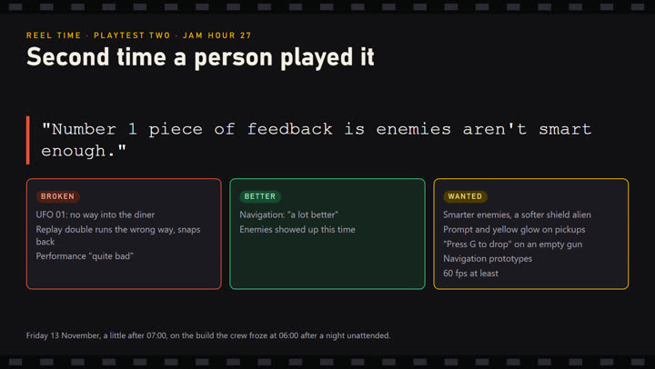
My eight notes from playtest two, sorted.
Playtest two: the enemies turned up, and they aren't smart enough Day 2, hour 27
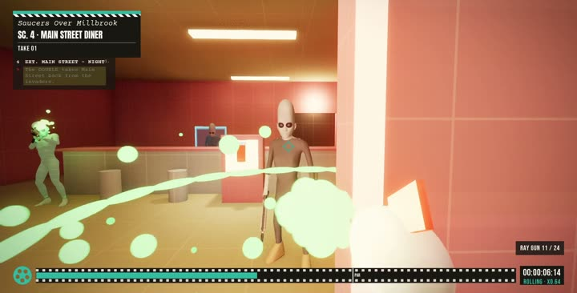
UFO 01 on the 05:30 reel: the autoplayer inside the diner with two aliens, on the build before the fix. On mine I couldn't get in.
Playtest two: the enemies turned up, and they aren't smart enough Day 2, hour 27

Before: The pause screen. Left: the Claude Design board from Thursday morning. Right: the game at 03:30 Friday.
The menus, from the design boards to the build Day 1, hour 24
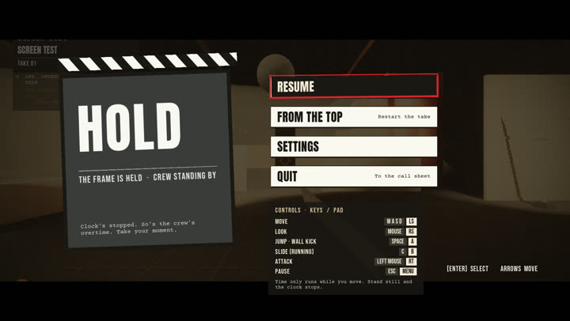
After: The pause screen. Left: the Claude Design board from Thursday morning. Right: the game at 03:30 Friday.
The menus, from the design boards to the build Day 1, hour 24

Before: The Dailies card. Board on the left, the 01:30 reel on the right: one take, 32.1 seconds against a par of 1:20.
The menus, from the design boards to the build Day 1, hour 24
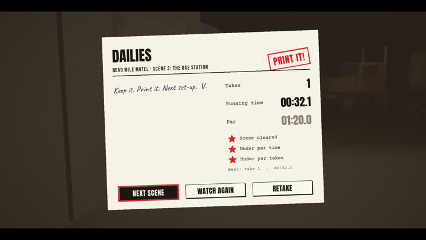
After: The Dailies card. Board on the left, the 01:30 reel on the right: one take, 32.1 seconds against a par of 1:20.
The menus, from the design boards to the build Day 1, hour 24

The Tech Rider. "No difficulty setting. The director is hard on everyone equally."
The menus, from the design boards to the build Day 1, hour 24

03:30 reel, back lot. The autoplayer's machete lands: the frame flashes white, then the blood.
At 4 a.m. a bot played the level for the camera Day 1, hour 24
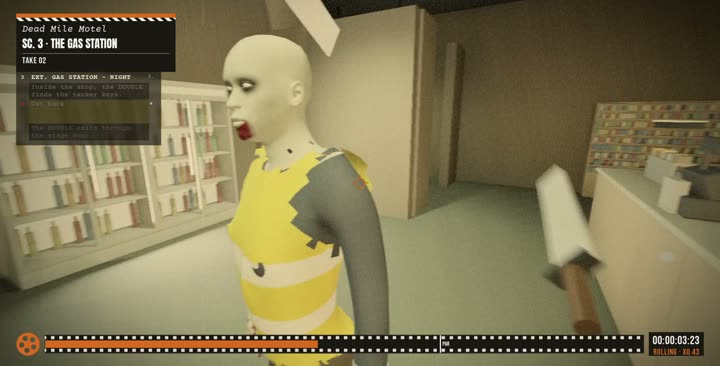
Through the shop for the tanker keys. A zombie in teal scrubs is waiting by the shelves.
At 4 a.m. a bot played the level for the camera Day 1, hour 24
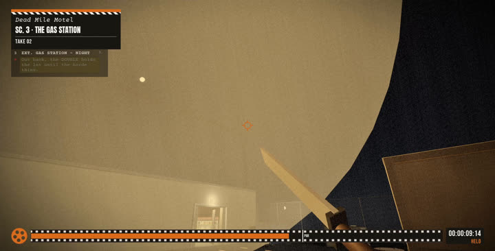
The autoplayer in the back lot, standing very still in front of the tanker.
At 4 a.m. a bot played the level for the camera Day 1, hour 24

The hour after the crash, from the Director's log.
Too many editors, one machine Day 1, hour 23

The night so far, from the Director's log.
The night shift: how the crew works while I sleep Day 1, hour 22

01:30 reel. The end of the replay: the stunt double runs for the stage door and out into the light, then the Dailies card.
Scene three, from the slate to the dailies Day 1, hour 21

Line one, with the caret: the DOUBLE clears the forecourt.
Scene three, from the slate to the dailies Day 1, hour 21

Line two, in the shop, with a hint in brackets: slide under the half-open shutter.
Scene three, from the slate to the dailies Day 1, hour 21

Near the end: the finished lines struck through.
Scene three, from the slate to the dailies Day 1, hour 21
The replay opens on a crane shot of the whole gas station.
Scene three, from the slate to the dailies Day 1, hour 21

The stunt double in the replay, machete in hand, by the shop.
Scene three, from the slate to the dailies Day 1, hour 21

Dailies: one take, 32.1 seconds against a par of 1:20, three stars, "Keep it. Print it. Next set-up."
Scene three, from the slate to the dailies Day 1, hour 21
Saucers Over Millbrook, Sc. 4. Main Street, lit by the crashed saucer down the road.
Three sets rebuilt in an evening Day 1, hour 19

Rain on Calloway Street, Sc. 2. The jazz club, always black and white.
Three sets rebuilt in an evening Day 1, hour 19

Counter with a till, built by script in Blender.
Three sets rebuilt in an evening Day 1, hour 19
Drinks fridge. Its cold glow lights the back aisle.
Three sets rebuilt in an evening Day 1, hour 19
Shelf unit. The reviewer said it reads a bit like a bookcase.
Three sets rebuilt in an evening Day 1, hour 19
Chest freezer.
Three sets rebuilt in an evening Day 1, hour 19
The replay at the end of the level: the Director's Cut overlay and the stage door. The figure is still the plain test mannequin; the stunt double isn't wired in yet.
Three sets rebuilt in an evening Day 1, hour 19
Seconds after the kill: blood on the pump and the floor, the body down behind it.
The machete hit, now the zombie feels it Day 1, hour 19

Thursday evening in four steps: the symptom, two causes, and the guard that stops both.
Edits that undid themselves Day 1, hour 18

Dead Mile Motel at 17:30. Slate, ACTION, two machete kills, a zombie gets through, CUT, and take two.
Milestone two: the core loop plays, in grey boxes Day 1, hour 18

06:33. The first capture: an empty template level.
Milestone two: the core loop plays, in grey boxes Day 1, hour 18

07:55. The first zombie, on Unreal's mannequin.
Milestone two: the core loop plays, in grey boxes Day 1, hour 18

11:00. Film looks on grey boxes. No HUD in any level.
Milestone two: the core loop plays, in grey boxes Day 1, hour 18
12:25. The slate and the HUD, an hour after nothing put them on screen.
Milestone two: the core loop plays, in grey boxes Day 1, hour 18

13:30. CUT, and the retake.
Milestone two: the core loop plays, in grey boxes Day 1, hour 18

13:40. Five scripted bodies replace the mannequin.
Milestone two: the core loop plays, in grey boxes Day 1, hour 18

15:30. The replay, on the fifth set of reels.
Milestone two: the core loop plays, in grey boxes Day 1, hour 18
17:30. The set dressed, and the first sound.
Milestone two: the core loop plays, in grey boxes Day 1, hour 18

The script page in place, top left under the slate. A mockup, not a screenshot. The film title on it is a placeholder.
From a playtest note to a script page, in an hour Day 1, hour 16

Three treatments of the same page, each tested over a dark set and a bright one.
From a playtest note to a script page, in an hour Day 1, hour 16
Six states: a new line types itself on, the page settles and fades, a finished line is struck through, stage directions teach the controls, the stage door opens, and the page folds away for CUT and the replay.
From a playtest note to a script page, in an hour Day 1, hour 16
The web build in numbers, and what isn't known yet.
An experiment: Reel Time builds for the browser Day 1, hour 16

My notes from playtest one, sorted.
I played it for the first time, and no enemies showed up Day 1, hour 16

Saucers Over Millbrook. The saucer over Main Street takes a hit, switches on its tractor beam and sinks toward the street.
The set reacts: a tractor beam and an exploding barrel Day 1, hour 14

Dead Mile Motel. A barrel by the diner takes a hit and goes up. The blast is a placeholder dome for now.
The set reacts: a tractor beam and an exploding barrel Day 1, hour 14

The beam on, seen from under the saucer. The HUD has changed colour too: each film now has its own accent.
The set reacts: a tractor beam and an exploding barrel Day 1, hour 14
The blast, a moment in. It's a plain dome because the effects pass hasn't happened yet.
The set reacts: a tractor beam and an exploding barrel Day 1, hour 14

What broke on the left, the rule it turned into on the right.
Eight rules the crew wrote for itself on day one Day 1, hour 14

Four steps from "won't build" to a fixed cook list, in under three hours.
The first packaged build had no levels in it Day 1, hour 14

Dead Mile Motel, take one. Walk in to the pumps, two zombies walk up, and the machete drops them both. 'Yes! That's the stuff!' is the Director.
The gas station gets dressed, and the machete gets its first kills on film Day 1, hour 13
Before: The same spot at 12:25 and at 17:30. Boxes became pumps, a canopy, a wrecked sedan, a tanker, a fence and a diner.
The gas station gets dressed, and the machete gets its first kills on film Day 1, hour 13
Two zombies at the pump, a swing in progress. These are the scripted bodies from this afternoon.
The gas station gets dressed, and the machete gets its first kills on film Day 1, hour 13

Take two. A zombie ragdolls off to the left, past the tanker. The subtitle is the Director moving on.
The gas station gets dressed, and the machete gets its first kills on film Day 1, hour 13

Saucers Over Millbrook. Three shots from the ray gun, then the player stops, and the bolts hang in the street. The HUD's bottom right corner flips between HELD and ROLLING.
Bullets you can watch: the ray gun and the revolver in slow time Day 1, hour 13

The noir club in black and white. The revolver's rounds show as bright streaks, and the HUD reads ROLLING ×0.16: the world at about a sixth of full speed.
Bullets you can watch: the ray gun and the revolver in slow time Day 1, hour 13

Two green bolts in mid-air, 1 second 17 frames into the take. The ammo counter reads 21 of 24.
Bullets you can watch: the ray gun and the revolver in slow time Day 1, hour 13
The revolver, three rounds left, one in the air on the right.
Bullets you can watch: the ray gun and the revolver in slow time Day 1, hour 13

The player hits the mark, the Director says 'Right on the X. Good.', and the screen cuts to DIRECTOR'S CUT: the take played back from two cameras, with a REC timecode and a skip prompt.
The Director's Cut: the replay finally shows up on film Day 1, hour 12

71 seconds, nothing cut: slate, walk in, two swings, CUT, take two slate, scene cleared, the mark, the replay, dailies, and the countdown leader into the next scene.
The Director's Cut: the replay finally shows up on film Day 1, hour 12

Hitting the mark. Two zombies down by the pumps, and the Director's line at the bottom.
The Director's Cut: the replay finally shows up on film Day 1, hour 12
Take two now gets its own slate. That was missing at 13:30.
The Director's Cut: the replay finally shows up on film Day 1, hour 12
All nine enemy types walk in at full speed. Zombies on the left, aliens in the middle, noir gangsters on the right. The glowing balls are enemy shots.
The cast: five bodies, built by script in under half an hour Day 1, hour 9
The line-up at the start of the clip: three zombies, two aliens behind the pillars, three men in suits and hats.
The cast: five bodies, built by script in under half an hour Day 1, hour 9

Take one at the gas station. Two zombies walk in, the player is killed, CUT! slams down, and take two is rolling a few seconds later.
CUT! Take two. Print it. Day 1, hour 9

Scene cleared. The dailies card comes up and PRINT IT! stamps the corner.
CUT! Take two. Print it. Day 1, hour 9

Take one, rolling. These two zombies are the new bodies from the NPC session, not mannequins.
CUT! Take two. Print it. Day 1, hour 9

Dailies: takes, running time against par, three stars, and NEXT SCENE, WATCH AGAIN or RETAKE.
CUT! Take two. Print it. Day 1, hour 9

Take one of Dead Mile Motel. The clapperboard drops in, the Director calls the scene, and the HUD stays: scene card top left, a film-strip timecode along the bottom.
An hour later: a slate, a HUD and ACTION! Day 1, hour 8

The run moves on to the next film. The forecourt cuts to the slate for Saucers Over Millbrook, the Director calls ACTION, and the ray gun HUD takes over.
An hour later: a slate, a HUD and ACTION! Day 1, hour 8

Saucers Over Millbrook. The HUD picks up the ray gun's ammo count, bottom right.
An hour later: a slate, a HUD and ACTION! Day 1, hour 8
The enemy test map: zombies on the left, aliens in the middle, noir men in suits and hats on the right. The yellow lines and floating labels are debug drawing.
An hour later: a slate, a HUD and ACTION! Day 1, hour 8
The noir set, a jazz club, in black and white with film grain. The exposure is blown out at the edges; that's on the fix list.
Thirteen stills of the game so far: five usable, eight broken Day 1, hour 7

The ray gun firing. The bolt is a real object that crawls when time is slow.
Thirteen stills of the game so far: five usable, eight broken Day 1, hour 7

Two bolts in the air. The glow washes out half the screen, which is also on the list.
Thirteen stills of the game so far: five usable, eight broken Day 1, hour 7
The zombie set with the machete and two shamblers. No grindhouse look in play yet; that is on the list too.
Thirteen stills of the game so far: five usable, eight broken Day 1, hour 7

The enemy test map: one enemy, and Unreal's red warning that the nav mesh needs rebuilding.
Thirteen stills of the game so far: five usable, eight broken Day 1, hour 7

The stall on a timeline. No commits from 08:26 to 10:20, and the 09:30 filming block fell in the middle.
The crew hit the usage limit and went dark for two hours Day 1, hour 6

Seven seconds of the first replay with kills. The figure is the player, replayed as a puppet. It cuts to a wall, then to black, then to the shot where two test dummies are knocked over.
The first replay is a rough cut Day 1, hour 4
Me, from outside. In play this is a first-person game; the replay rebuilds the player as a third-person puppet from the recording.
The first replay is a rough cut Day 1, hour 4
The kill shot: both dummy boxes tipping over, seen from a camera mark across the stage.
The first replay is a rough cut Day 1, hour 4

A shambler spawns 7 metres out, walks in, tells, and hop-lunges into the camera. Then a fresh one takes a debug hit and ragdolls away.
The first zombie walks, lunges and ragdolls Day 1, hour 3

The lunge, from the receiving end.
The first zombie walks, lunges and ragdolls Day 1, hour 3

One hit: the ragdoll is thrown the way the hit was going.
The first zombie walks, lunges and ragdolls Day 1, hour 3

Five seconds on the soundstage: run, slide under the lintel, run at the checker wall, jump, kick off it. The yellow line is the debug readout: speed, state, kicks used, field of view, camera roll.
Run, slide, wall kick: the player moves Day 1, hour 3

Mid-slide under the lintel. The field of view widens and the camera rolls into the slide.
Run, slide, wall kick: the player moves Day 1, hour 3

Full run at the checker wall the demo spawns, 8.2 metres a second.
Run, slide, wall kick: the player moves Day 1, hour 3
Just after the kick. The camera rolls away from the wall, then settles.
Run, slide, wall kick: the player moves Day 1, hour 3

Saucers Over Millbrook, Scene 4: a fly up the main street, past the parked cars to the crashed saucer, then up to the one still hovering.
Two more sets, and one that built itself three times Day 1, hour 3
Dead Mile Motel, Scene 3: from the player start, up the road under the pump canopy, to the shop door and over the roof.
Two more sets, and one that built itself three times Day 1, hour 3
Where the player starts. Pastel shopfronts, staggered cars for cover, the crashed saucer closing the far end and a second one overhead.
Two more sets, and one that built itself three times Day 1, hour 3
The wide camera mark. The hotel balcony on the left is where two enemies will shoot down the street.
Two more sets, and one that built itself three times Day 1, hour 3

The overhead mark. The red disc by the pink diner is the mark the player finishes on.
Two more sets, and one that built itself three times Day 1, hour 3

The player start. Four red pump placeholders under the canopy, the shop door lit behind them.
Two more sets, and one that built itself three times Day 1, hour 3

The low camera mark, at floor level among the pumps.
Two more sets, and one that built itself three times Day 1, hour 3

The overhead mark, which mostly films the top of the canopy. It needs moving.
Two more sets, and one that built itself three times Day 1, hour 3

I ran the UI brief through Claude Design and got a style tile, a logo, a component sheet and 15 screens. Menus are call sheets, the pause screen is a slate that says HOLD.
The look arrives: production paperwork, in 19 artboards Day 1, hour 2
HUD mockup for the zombie film: orange accents, shells for ammo.
The look arrives: production paperwork, in 19 artboards Day 1, hour 2
HUD mockup for the 50s alien film: teal and pink, plasma cells.
The look arrives: production paperwork, in 19 artboards Day 1, hour 2

HUD mockup for the noir film: black and white only, so warnings rely on shape and brightness.
The look arrives: production paperwork, in 19 artboards Day 1, hour 2

Scene start: the slate, then ACTION!
The look arrives: production paperwork, in 19 artboards Day 1, hour 2
One hit: CUT! and the take number rolls over. The whole beat is under a second.
The look arrives: production paperwork, in 19 artboards Day 1, hour 2

The director's cut replay overlay, with skip and fast forward.
The look arrives: production paperwork, in 19 artboards Day 1, hour 2
Level select as a shooting schedule.
The look arrives: production paperwork, in 19 artboards Day 1, hour 2

The style tile: paper cream, ink black, tape red, and a pair of accent colours for each film genre.
The look arrives: production paperwork, in 19 artboards Day 1, hour 2

Three logo directions. A was chosen: the doubled E of REEL as a frame of film.
The look arrives: production paperwork, in 19 artboards Day 1, hour 2
Pass one of the grindhouse look on the screen-test set: grain, scratches, a vignette, frame jitter and a warm cast.
The first set, and a film look that won't hold still Day 1, hour 2

Before: The same camera with the look off and on. Whites go cream, reds go orange, the corners darken.
The first set, and a film look that won't hold still Day 1, hour 2
After: The same camera with the look off and on. Whites go cream, reds go orange, the corners darken.
The first set, and a film look that won't hold still Day 1, hour 2

Wide mark. Rendered offscreen without auto exposure, so it's much darker than the game view.
The first set, and a film look that won't hold still Day 1, hour 2

Low mark, at floor level, looking at the slide wall and its red lintel.
The first set, and a film look that won't hold still Day 1, hour 2

Side mark, blocked. The camera sits right behind the plywood flat.
The first set, and a film look that won't hold still Day 1, hour 2
Three cuts from the Engine session's test clip: walk to the cylinder, turn, walk the wall. The input is scripted.
First footage, and the take that filmed the wrong window Day 1, hour 2

The Engine session's first task: six checks, two with caveats.
First footage, and the take that filmed the wrong window Day 1, hour 2

The first milestone landed at 06:08, 68 minutes into the jam. Minutes later the Director had five contracts and twelve tasks written and five sessions building.
Pitch locked: Reel Time, nearly three hours early Day 1, hour 2

The first twelve tasks, by session. Movement and time are first because moving is what runs time.
Pitch locked: Reel Time, nearly three hours early Day 1, hour 2

Task T-0005, trimmed. Anything a player can see needs a still and a clip before it can go to review.
Pitch locked: Reel Time, nearly three hours early Day 1, hour 2

Six compile attempts. The first two failures were ours, the next three were one Unreal 5.9 change, and the sixth passed.
Porting NVIDIA DLSS from Unreal 5.8 to 5.9 in 75 minutes Day 1, hour 2

Three compiles of hand patches, then the switch Unreal 5.9 provides for exactly this.
Porting NVIDIA DLSS from Unreal 5.8 to 5.9 in 75 minutes Day 1, hour 2
Launch one was blocked by a version label, launch two crashed on the first frame, launch three came up clean with DLSS only.
Porting NVIDIA DLSS from Unreal 5.8 to 5.9 in 75 minutes Day 1, hour 2

What the DLSS plugin reported when asked directly through the editor's MCP tools.
Porting NVIDIA DLSS from Unreal 5.8 to 5.9 in 75 minutes Day 1, hour 2

Two evenings of setup before the jam: a crew of Claude Code sessions, a smoke test that found 11 problems, the rules, the theme reveal and a Q&A. No game.
Pre-production: everything that existed before the clock Day 1, hour 1
Two evenings of setup, then the clock. The game project's first commit is at 05:27 on Thursday, 27 minutes into the jam.
Pre-production: everything that existed before the clock Day 1, hour 1
Who talks to whom. Every arrow is a file dropped in an inbox folder.
Pre-production: everything that existed before the clock Day 1, hour 1

A task's journey, from a request to something a player can see.
Pre-production: everything that existed before the clock Day 1, hour 1
Eight of the eleven problems from the smoke test on Tuesday 10 November.
Pre-production: everything that existed before the clock Day 1, hour 1